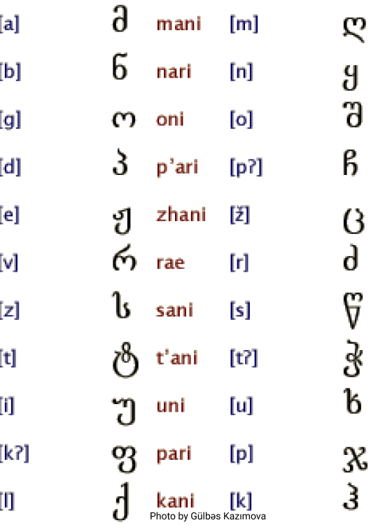
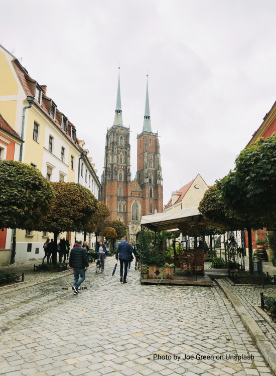

ინფორმაცია





ქ.ვროცლავი
იხილეთ მეტი2019 წლის 27 სექტემბერს ვროცლავში გაიხსნა საქართველოს პირველი საპატიო საკონსულო პოლონეთში. ვოიჩეხ ვრუბელი, მეწარმე ვროცლავიდან, არის საპატიო კონსული. მისი მიზანია პოლონეთ-საქართველოს ურთიერთობების დამყარება და განმტკიცება ადგილობრივი თვითმმართველობის, განათლების, კულტურის, ტურიზმისა და ეკონომიკის სფეროებში, ასევე პოლონეთში მცხოვრები საქართველოს მოქალაქეების დახმარება.
წაიკითხე მეტი Facebook გვერდზე
და მიიღეთ უახლესი ამბები ჩვენი საქმიანობის შესახებ
Facebookროგორ მოგვაგნოთ?
რინეკი 5, 50-438 ვროცლავი